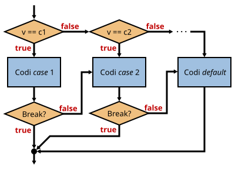

Aquesta estructura té un funcionament similar a if ... else if ... else ... però amb algunes diferències importants:
S'ha d'utilitzar quan se sap que la variable només pot prendre uns quants valors concrets.
Aquests valors se'n diuen "casos".
L'avantatge respecte if ... else if ... else ... és que el codi és més simple i entenedor.
L'estructura general és:
switch (variable) {
case valor1:
// Sentències que s'executaran si variable és igual a valor1
break;
case valor2:
// Sentències que s'executaran si variable és igual a valor2
break;
default:
// Sentències que s'executaran si variable no és igual a cap dels valors anteriors (casos)
}
La variable que es posa dins de switch() ha de ser de tipus enter, caràcter o text.
En cada case ...: s'ha de posar una constant o literal del mateix tipus que la variable del switch.
La variable del switch() es compararà amb els diferents casos i executarà el codi del cas que sigui igual.
El codi situat en el cas default: s'executarà si la variable no coïcideix amb cap dels casos anteriors.
El cas default: és opcional, però és recomanable posar-ho per preveure valors inesperats.
Si es posa, ha d'anar al final i no pot portar la instrucció break.
Pot servir per notificar un error indicant que el valor introduït no és cap dels casos permesos.
La instrucció break fa que el programa salti al final del switch(), per això es posa al final de cada cas.
Si no es posa, el programa seguirà executant les comandes del següent cas.
El codi anterior convertit a if ... else if ... else ... seria:
if (variable == valor1) {
// Sentències que s'executaran si variable és igual a valor1
} else if (variable == valor2) {
// Sentències que s'executaran si variable és igual a valor2
} else {
// Sentències que s'executaran si variable no és igual a cap dels valors (casos)
}
switch (estat) {
case "on":
alert("La màquina està engegada");
break;
case "off":
alert("La màquina està aturada");
break;
default:
alert("ERROR: no s'ha pogut determinar l'estat de la màquina");
}
Una altra forma d'aquesta estructura que ens permet simplificar el codi és la possibilitat d'executar el mateix bloc de codi per més d'un cas:
switch (fruita) {
case "poma":
case "cirera":
case "banana":
alert("És una fruita dolça");
break;
case "llimona":
case "pinya":
alert("És una fruita àcida");
break;
default:
alert("No sé quin tipus de fruita és");
}
El codi equivalen amb if ... else if ... else ... seria:
if (fruita == "poma" || fruita == "cirera" || fruita == "banana")
alert("És una fruita dolça");
else if (fruita == "llimona" || fruita == "pinya")
alert("És una fruita àcida");
else
alert("No sé quin tipus de fruita és");
En general, s'ha de posar la paraula break al final de cada cas, però hi ha casos en què no.
En el següent exemple, si la variable event pren el valor "stop", executa tant el codi de stop com el de pause, però si no es posa el break del segon cas, també s'executarà el default:
switch (event) {
case "stop":
principi = true;
case "pause":
aturat = true;
break;
default:
alert("ERROR: la comanda ha de ser 'stop' o 'pause'");
}
En aquest cas, el codi equivalent amb if ... else if ... else ... seria:
if (event == "stop" || event == "pause") {
if (event == "stop") {
principi = true;
}
aturat = true;
} else {
alert("ERROR: la comanda ha de ser 'stop' o 'pause'");
}